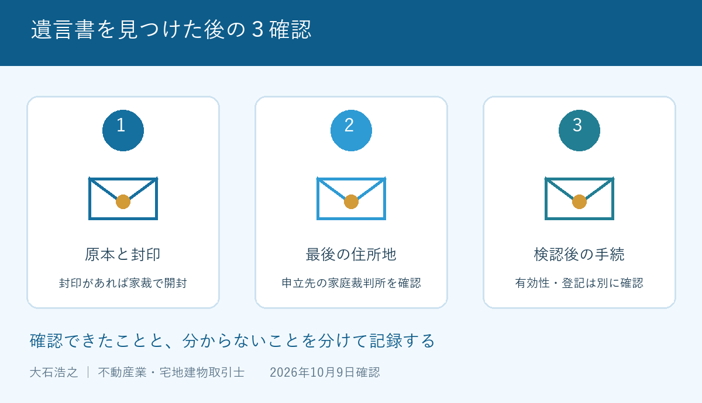

親が亡くなり、実家の引出しを整理していたら、遺言書らしい封筒が出てきた。内容を確かめたい気持ちは自然です。ただ、封印があるなら、家族だけで開けてしまう前に立ち止まってください。家の査定より先に、原本の扱いを確認する場面です。
大石浩之（磐田市／不動産業）です。私は宅地建物取引士として、遺言の有効性を判断する立場ではありません。2026年10月9日に裁判所の案内を確認し、実家を売る前の家族が、専門家へ何を持って相談するかを整理しました。
確認１：封印のある遺言書を開けない
裁判所の「遺言書の検認」は、封印のある遺言書を家庭裁判所で開封するよう案内しています。検認とは、遺言書の状態や内容を確認して記録し、偽造や変造を防ぐための手続です。単に封筒を開ける行事ではありません。
遺言書の保管者や発見した相続人は、遺言者の死亡を知った後、遅滞なく検認を請求する必要があります。一方、公正証書遺言や、法務局保管の自筆証書遺言について交付される遺言書情報証明書には、検認が不要という例外があります。
自宅で見つかった紙を見て、すべて同じ手続だと決めつけないでください。私は、どんな形式の書類か、どこで保管されていたかを相談時に伝えるよう勧めます。封印のないものや既に開封されていたものも、不要と自己判断せず確認します。
法務局で預かる仕組みの違いは、自筆証書遺言の法務局保管の記事で説明しました。自宅にある遺言書原本と、法務局から交付された証明書を、一つの「遺言の紙」として扱わないことが出発点です。
私の提案は、封筒も含めて現状を保ち、書き込みや補修をせずに保管することです。家族への連絡には、発見日、発見場所、現在の保管者を記した別紙を使います。原本へ直接「発見した日」を追記する必要はありません。
確認２：最後の住所地と申立ての費用
遺言書の検認の申立先は、裁判所の案内では遺言者の最後の住所地の家庭裁判所です。家の所在地や、発見した家族の現在の住所で決めるものではありません。実家が磐田市でも、申立先は別の地域になる場合があります。
申立てに必要な費用は、遺言書１通につき収入印紙800円分と連絡用郵便料です。封書の場合は封書１通として案内されています。郵便料は裁判所ごとに異なるため、提出先の案内を確認します。800円だけを手続全体の総額とは考えないでください。
| 確認すること | 家族が整理する資料 | 確認先 |
|---|---|---|
| 申立先 | 遺言者の最後の住所地 | 裁判所の管轄案内 |
| 申立ての準備 | 遺言書の種類、通数、相続関係 | 提出先の家庭裁判所 |
| 費用の内訳 | 印紙、郵便料、証明書等の費用 | 裁判所・依頼する専門家 |
戸籍などの必要書類は、家族関係によって確認する範囲が変わります。古い控えだけで足りるか、何を取得するかを申立先へ聞いてから動く方が、取り直しを減らせます。家族が別々に同じ書類を取り寄せないよう、取得担当も一人ずつ決めます。
私は、費用と提出先が公的な案内で示されている点を評価します。家族が専門家へ相談する前にも、準備の入口をつかめます。申立ての話と不動産売却の話を分けることで、急いで買主を探す前に、必要な手続を見通せます。
その上で注文したいのは、「検認まで頼めば家が売れる」という一括した説明です。検認の申立て、証明書の取得、名義変更、売却の仲介は別の作業です。依頼先には、どこまでが見積りに含まれ、次に誰へ引き継ぐのかを示してほしいと思います。

確認３：検認は有効性の判定ではない
裁判所は、検認を遺言の有効・無効を判断する手続ではないと明記しています。家庭裁判所で確認したから内容に争いがなくなる、という意味ではありません。「検認済み」と「有効性が確定した」を同じにしないでください。
裁判所の案内では、検認後に遺言を執行するためには、検認済証明書を付ける必要があるとされています。証明書の申請には遺言書１通につき150円分の収入印紙が必要です。検認の申立費用とは別なので、手続後に何を受け取るかまで確認します。
私なら不動産の相談では、検認の状況と、登記を相談している専門家の有無を別々に聞きます。遺言の文面から、誰がどの不動産を取得し、売却に向けてどの登記が必要かを整理するためです。書類に「家」とあっても、対象の特定を私だけで断定しません。
相続人の間で解釈や有効性に意見の違いがあるときは、売出し日を先に約束しない方がよいと私は考えます。買主との予定だけが先行すると、家族の確認時間を圧迫します。紛争は弁護士へ、登記は司法書士へ、具体的な資料を示して相談します。
磐田・袋井の実家と申立先を分ける
磐田市・袋井市に実家があるご家族でも、検認の相談では「物件の住所」と「親の最後の住所」を分けてメモするのが私の提案です。施設入居などで住所の経緯が分かりにくい場合は、記憶で決めず、申立先の確認に使う資料を裁判所へ聞きます。
私はこう考えます。片付けの予定表を作る場面なら、遺言書の封筒を処分対象の書類から外し、誰が原本を預かるかを最初に決めます。売却価格の相談は、その後でもできます。まだ家を売ると決められない家族にも、原本を守る準備は勧めたい。これは相談実話ではなく、実家じまいを進める際の私の判断です。
法務局に保管された遺言の有無を調べたい場合は、遺言書保管事実証明書の確認事項も参照してください。今回の、自宅で原本を発見した後の検認とは、相談の入口が違います。
最高裁判所は10月１日から１週間を「法の日週間」と案内しています。2026年10月9日には週間は終了しています。ここでは参加募集ではなく、法律手続を確認するきっかけとして取り上げました。相談や申立てに、この週間だけの期限を設ける話ではありません。
今日は原本の保管場所を家族で共有する
遺言書を見つけた日にできる準備は、原本の保管場所、封印の有無、遺言者の最後の住所地を整理することです。売却を決める必要はありませんが、検認が必要な場合の申立てを、売るか迷っていることを理由に先延ばしにしないでください。
私は、片付けをどこまで続けてよいか迷う家族に、一律の期限は示せません。書類の種類も相続関係も違うからです。まず原本を保全し、確認が必要な作業と、それ以外の家の管理を分ける案内をしたいと思います。
- 封印があれば自分たちで開封しない。
- 最後の住所地から申立先を確認する。
- 検認後の登記と売却は専門家と別途整理する。
富士ヶ丘サービスは、磐田・袋井で介護と不動産を一体で相談できる窓口です。家族が困らない売却へ、相続不動産の相談先の役割を分けてご案内します。遺言の有効性、相続、登記の個別判断は、弁護士や司法書士などの専門家に確認してください。